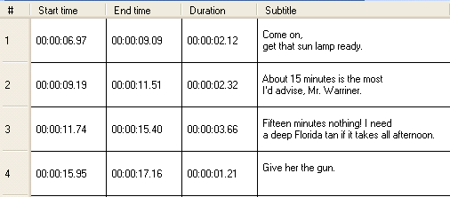

Creating subtitles
If you don't have a subtitle file available for your multimedia file, you can create your own subtitles.
Subtitles comprise two kinds of information: time and text.
- Time consists of two points: the temporal point when the subtitle appears (start time) and the point when it dissappears (end time).
- Text refers to the content of the subtitle, i.e. the words to appear under the image.
That's why the subtitle grid contains, apart from the column with the subtitle number, a column with the start time, a column with the end time and a column with the text. In order to facilitate certain tasks, a column with the duration of the subtitle has been added.

Subtitling is a process involving various steps:
- Spotting: Deciding which parts of the dialogue will be converted into subtitles.
- Cueing: Marking the start time and end time of each subtitle.
- Writing: You may write text in a subtitle, or leave it blank for the students to fill in.